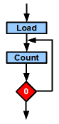

Path:
Home =>
AVR overview =>
Time loops => with a 16 bit double register
(Diese Seite in Deutsch:
 )
)


Time loops with a 16 bit double register in AVR assembler
With this you are able to program time loops for delays of up to a half second. The
blinking of a LED is performed by this.
Code of a 16 bit loop
A time loop with a 16 bit double register in assembler looks like that:
.equ c1 = 50000 ; Number of exections of the loops
ldi R25,HIGH(c1) ; Load MSB register with the upper byte
ldi R24,LOW(c1) ; Load LSB register with the lower byte
Loop: ; Loop starts here
sbiw R24,1 ; Decrease double register value by one
brne Loop ; if not zero start loop again, if zero continue
The constant c1 again defines the number of loop executions. As the 16 bit
register can have 65,536 different numbers, it can count 256 times longer
than with an 8 bit register only.
The instruction "SBIW R24,1" decreases the register pair word-wise.
That means that whenever the LSB underflows, the MSB is also automatically
reduced by 1. Note that only the register pairs R25:R24, R27:R26, R29:R28
and R31:R30 can do that. As R27:R26 (called X), R29:R28 (called Y) and R31:R30
(called Z) can do additional things, R25:R24 is the number 1 candidate for that
use as 16 bit counter.
Controller clock cycles
The number of clock cycles for these instructions LDI, SBIW and BRNE can be read
from the device data book for the AVR. The following are the clock cycles:
.equ c1 = 50000 ; No instruction, 0 cycles, only for the assembler
ldi R25,HIGH(c1) ; 1 cycle
ldi R24,LOW(c1) ; 1 cycle
Loop: ; Loop starts here, no instruction, only for the assembler
sbiw R24,1 ; 2 cycles
brne Loop ; 2 cycles if not zero, 1 cycle if zero
The number of clock cycles is the sum of
- Load: 2 instructions 1 cycle each, once executed,
- Loop: 2 cycles for SBIW, two cycles for BRNE and not zero, executed
(c1 - 1) times,
- Loop end: 2 cycles for SBIW, one cycle for BRNE, executed once.
The number of clock cycles therefore is:
ncycles = 2 + 4 * (c1 - 1) + 3
or:
ncycles = 2 + 4 * c1 - 4 + 3
or even simpler:
ncycles = 4 * c1 + 1
Time delays of a 16 bit counting loop
The maximum clock cycles is reached if c1 is zero. In this case the loop is executed
65,536 times. At this maximum count a delay of 4 * 65,536 =
262,145 clock cycles delay are possible. With c1=50,000 (see above source code) and an
1.2 MHz clock a delay of 166.7 ms is reached.
Variable delays of different durations are sometimes necessary. That is the case
e. g. if the software should work at different clock frequencies. Then we have
to calculate the counter value from the clock frequency. Such a piece of software
is shown below. Two different delays are used as calculation examples (1 ms
and 100 ms).
;
; Delay 16-Bit with variable duration
;
.include "tn13def.inc"
;
; Hardware-dependant constant
;
.equ fc = 1200000 ; Controller clock (default)
;
; My constant
;
.equ fck = fc / 1000 ; Controller frequency in kHz
;
; Delay routine
;
Delay1ms: ; 1 ms routine
.equ c1ms = (1000*fck)/4000 - 1 ; Constant for 1 ms
ldi R25,HIGH(c1ms) ; Load counter
ldi R24,LOW(c1ms)
rjmp delay
;
Delay100ms: ; 100 ms routine
.equ c100ms = (100*fck)/4 - 1 ; Constant for 100 ms
ldi R25,HIGH(c100ms) ; Load counter
ldi R24,LOW(c100ms)
rjmp delay
;
; Delay loop, expects constant in R25:R24
;
Delay:
sbiw R24,1 ; Count down
brne Delay ; Until zero
nop ; additional delay
Hint: The constants c1ms and c100ms are calculated in two different ways to reduce
rounding inaccuracies in integer division and to avoid overflows of 32-bit integers.
Increasing delay!
With the following trick you can increase the delay time:
.equ c1 = 0 ; 0 clock cyles (only the assembler works)
ldi R25,HIGH(c1) ; 1 clock cycle
ldi R24,LOW(c1) ; 1 clock cycle
Loop: ; Loop start
nop ; do nothing, 1 clock cycle
nop ; do nothing, 1 clock cycle
nop ; do nothing, 1 clock cycle
nop ; do nothing, 1 clock cycle
nop ; do nothing, 1 clock cycle
nop ; do nothing, 1 clock cycle
sbiw R24 ; 2 clock cycles
brne Loop ; 2 clock cycles if not zero, 1 clock cycle when zero reached
Each loop cycle (except for the last one) now consumes 10 clock cycles, the last
one only nine. The following formulas apply:
nc = 2 + 10*(c1 - 1) + 9
or
nc = 10 * c1 + 1
At max (c1 = 0) now 655,361 clock cycles delay are possible.
If you need a certain number of clock cycles nc, calculate the constant c1 by
c1 = (nc - 1) / 10
or in integer math with rounding:
c1 = (nc - 1 + 5) /10
The blink program
 With that we are at the most wanted blink program for AVRs: the blinking LED in
one-second repetition. The hardware needed is very small. The software is here:
With that we are at the most wanted blink program for AVRs: the blinking LED in
one-second repetition. The hardware needed is very small. The software is here:
.include "tn13def.inc" ; for an ATtiny13
.equ cDelay = 500 ; Delay in milli-seconds per half-wave
.equ clock = 1200 ; Clock frequency in kHz (default)
.equ c1 = ((cDelay*clock)-1+5)/10 ; Delay counter, determines the blink frequency
; Hint: +5 added for rounding, result is 60,000)
sbi DDRB,0 ; Portbit is output
Loop:
sbi PORTB,0 ; Portbit to high
ldi R25,HIGH(c1)
ldi R24,LOW(c1)
Loop1:
nop
nop
nop
nop
nop
nop
sbiw R24,1
brne Loop1
cbi PORTB,0 ; Portbit to low
ldi R25,HIGH(c1)
ldi R24,LOW(c1)
Loop2:
nop
nop
nop
nop
nop
nop
sbiw R24,1
brne Loop2
rjmp Loop
Blink well!
To the top of that page
©2009-2019 by http://www.avr-asm-tutorial.net